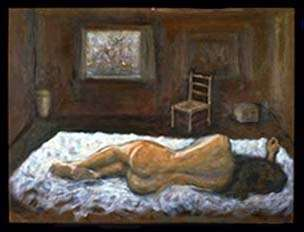

|
| Gallery 1 | Gallery 2 | Gallery 3 | Gallery 4 | Gallery 5 |
|
 |
Knowledge always changes through time, but vested interests try to permit only those changes that are good for them. Authoritarian education derives its authority from political and economic power, and generally not from the quality of the knowledge it inculcates. As education became more important economically in the twentieth century, it became more specialized, in the sense that each teacher devoted his full time to an increasingly narrow topic. In this state, the specialist loses his authority when he ventures to evaluate the big picture.
In the 19th century, biologists were usually competent painters, but as specialization took over at the beginning of the 20th century, both science and painting became "abstract." Mathematics came to be called the language of science, and a science was considered to be more scientific when it was more mathematical. The mathematical habit of mind inclines biologists to see organisms as disembodied information, ultimately as the information contained in the genetic code. Change (they are likely to say) is random, "chaotic," ultimately unknowable. There is no place in this system for a radical critic of the purpose and direction of the system.
If physicists and biologists learn to see the world in a lively way by exercising the power to paint, they will learn to prevent the atrophy of their critical powers.
| Gallery 1 | Gallery 2 | Gallery 3 | Gallery 4 | Gallery 5 |